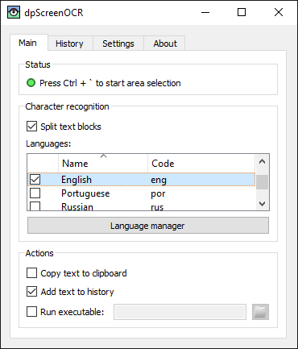

dpScreenOCR
El dpScreenOCR és un programa per a reconéixer text en la pantalla. Funciona amb el Tesseract, admet més de 100 llengües i pot separar blocs de text independents, com ara les columnes. Llegiu el manual per a obtenir instruccions d’instal·lació, configuració i ús del programa.
Baixeu-vos la versió 1.5.0 (canvis, llicència):
Contribuïu participant amb la traducció o el desenvolupament.